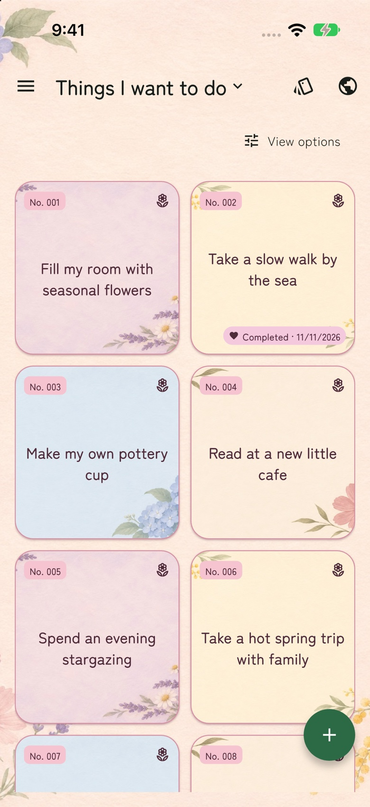
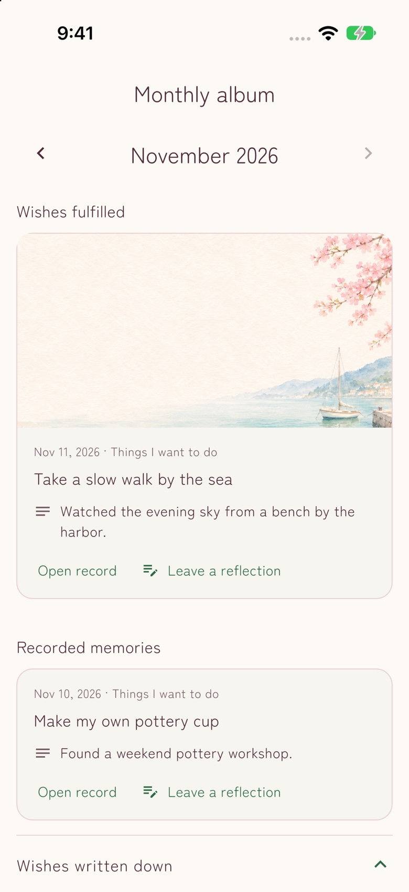

基本功能
免費
寫下心願、標記達成、保存照片與筆記、想像未來、回顧、備份與還原，以及基本外觀設定，都能使用。也可在社群發布與回應。
 我的100個心願
我的100個心願
專屬於你的心願清單
有一天想去的地方，還有日常的小小期待。
把它們留在喜歡的卡片上，一起期待實現的那一天。


不用一口氣寫滿100個，先從一個開始。
一間安靜的咖啡廳、一本想讀的書、一個想見的人。想到什麼就寫下來，選個喜歡的卡片圖案。每次打開清單，都能找到下一件想試試的事。
從提問與準備好的點子，找出自己想做的事。
選擇喜歡的卡片圖案、桌布與色彩。
留下走過的小小一步，還有當時的心情。
01 / 尋找靈感
不用一次想出100個心願。回答一個問題，或看看準備好的點子，再用自己的話寫下想做的事。
「如果時間和金錢都不設限，你想做什麼？」
也能把喜歡的事、重視的事與對未來的想法，留在「未來的自己」。

02 / 換上喜歡的模樣
今天想簡單寫，明天想像貼紙手帳一樣裝飾。搭配卡片、桌布與主題色，讓清單有自己的模樣。


這三款為付費設計，可單次購買，或於Premium訂閱有效期間使用。也提供免費的基本設計。
03 / 想像以後
幾年後，你想過著什麼樣的日子？即使還沒確定答案，也能先留下現在的想法。附上一張照片或內建插畫，過一陣子再回來看看。
「未來的自己」的回答儲存在裝置中，不會自動公開。

04 / 回顧日常
為達成的心願加上照片與筆記。每月相簿會整理實現的事與留下的記錄，讓你回顧走過的日子。過程中的小小一步，也值得留下。

想找一點新靈感的時候
從本月主題與其他人的心願，找到新的點子。只分享自己選擇的達成記錄，為別人送上祝賀，也能把喜歡的點子加入自己的清單。
分享完全自願。只用來保存自己的清單與回顧，也很適合。

選擇適合自己的方式
基本功能
寫下心願、標記達成、保存照片與筆記、想像未來、回顧、備份與還原，以及基本外觀設定，都能使用。也可在社群發布與回應。
單次購買組合包
可選擇包含卡片與搭配桌布的設計包，或額外字型包。已購買的內容在Premium訂閱到期後仍可使用。
Premium
移除廣告、使用方案內的設計、桌布與額外字型，也能批次整理標籤，新增與管理自訂清單。
價格與內容請以應用內的商店畫面為準。單獨購買設計或字型包不包含移除廣告。 額外字型以日文為主，未收錄的中文字會使用系統字型。
從一個開始就可以。參考提問與準備好的點子，想到時再慢慢加進去。
個人清單不會自動公開。你可以自己選擇要分享到社群的卡片。
可用備份功能匯出記錄，之後再還原。這不是裝置之間的自動同步功能。購買項目請至原先購買的商店還原。
選一張喜歡的卡片，開始寫自己的心願清單。